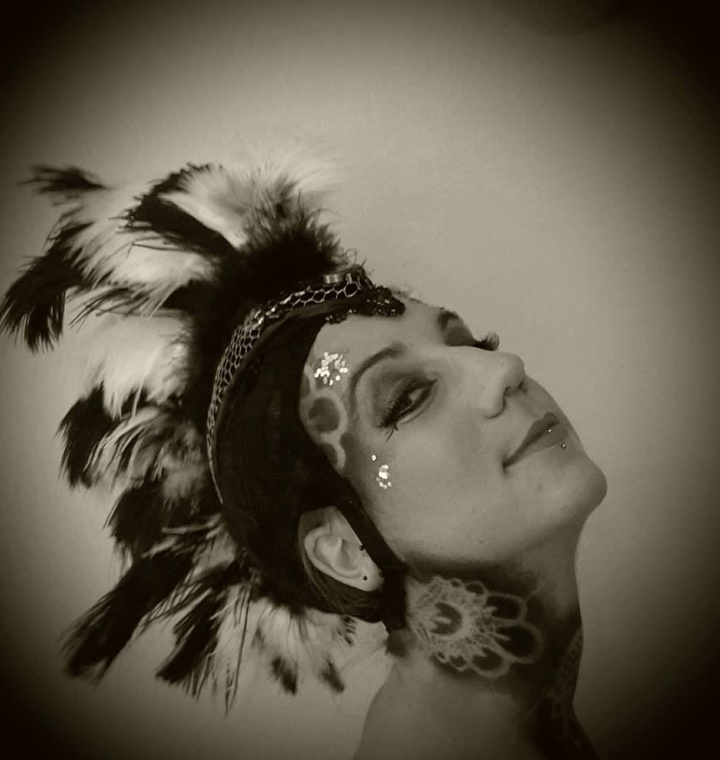

BERLIN
Ley Lotta

Ley Lotta
Ley ist eine vielseitige Künstlerin aus Hamburg und lebt seit über zehn Jahren in Berlin. Seit Kindheitstagen auf der Bühne, als Musikerin und Zirkusartistin — solo, mit dem Performance-Kollektiv Entourage Berlin und in verschiedenen Bandprojekten, darunter The Electronic Swing Orchestra und Frollein Smilla.
Ley ist Songwriterin und Sounddesignerin, studierte Musiktherapeutin und Körpertherapeutin sowie professionelle Multi-Hoop-Artistin mit einer besonderen Liebe für LED-Lichtequipment. Der Schwerpunkt im Zirkus liegt auf Walking Acts, aufwendigen Kostümen, Multi-Hoop-Artistik und feinen LED-Shows mit verschiedenen Requisiten.
Gebucht wird Ley für Festivals, Firmenfeiern, Galas, Hochzeiten und Weihnachtsmärkte — von Berlin aus deutschlandweit und international.
Lucina's Light
Referenzen
LED-Show, Walking Acts und Galashows auf Schlössernächten, Lichterfesten und Festivals — in ganz Deutschland und international.
Kulturveranstaltungen
- Dresdner Schlössernacht
- Potsdamer Schlössernacht
- Ahrenshooper Kunstnacht
- Familiennacht Zitadelle Spandau
- Neujahrsleuchten Greifswald
- Lichterfest Schloss Trebnitz
- Lichterfest Grabow
- Wittenberger Erlebnisnacht
- Spreewälder Lichternächte
- Weißes Picknick Boltenhagen
- Lichterblütenfest Seehausen
- Kulturnacht Buckau
- Lichterfest Ribnitz-Damgarten
- Lunaris – Ball der Ewigen Sterne
- Feen, Faune & Fabelwesen Boltenhagen
- u. v. m.
Festivals
- Garbicz Festival
- Fusion Festival
- at.tension Festival
- Bucht der Träumer Festival
- 3000° Festival
- detect classic Festival
- Per Anhalter Festival
- Kulturelle Landpartie Wendland
- Phoenix Fire Convention (Galashow)
- European Juggling Convention (Galashow)
- Jai Thep Festival, Thailand (Galashow)
- u. v. m.
Show Feedback
“Die Lichtshow von Ley Lotta war zweifellos einer der Höhepunkte unserer 100-Jahr-Feier. Mit ihrer außergewöhnlichen Performance hat sie unsere Mitglieder und Gäste begeistert und einen besonderen Moment geschaffen, der vielen noch lange in Erinnerung bleiben wird.
Die Verbindung von Licht, Bewegung, Musik und präziser Choreografie war visuell beeindruckend, zugleich elegant und hochwertig inszeniert. Gerade bei einer Veranstaltung mit sehr unterschiedlichen Gästen und Generationen ist es nicht selbstverständlich, ein Publikum gleichermaßen zu erreichen – „Lucina’s Light“ ist dies eindrucksvoll gelungen.
Die große Aufmerksamkeit während der Performance und insbesondere die spontane Forderung des Publikums nach einer Zugabe waren für uns die schönste Bestätigung dafür, wie gut die Show bei unseren Mitgliedern und Gästen angekommen ist.
Die Zusammenarbeit mit Ley Lotta haben wir sowohl in der Vorbereitung als auch am Veranstaltungstag als sehr professionell, zuverlässig und angenehm erlebt. Mit „Lucina’s Light“ hat sie wesentlich dazu beigetragen, unserem 100-jährigen Jubiläum einen besonderen und erinnerungswürdigen Moment zu geben.
Wir bedanken uns sehr herzlich für diesen großartigen Auftritt und können Ley Lotta und „Lucina’s Light“ für anspruchsvolle Veranstaltungen und besondere Anlässe uneingeschränkt empfehlen.”
“Wir sind immer noch so beeindruckt und dankbar, dass wir Leys Lichtershow auf einem Festival sehen konnten. Anderswo hätten wir allein für diese Show auf Cirque du Soleil Niveau den Ticketpreis des Festivals gezahlt - es war wirklich unglaublich. Auch deshalb ist das Festival eines unserer Sommer Highlights - unsere Tochter spricht noch heute von dieser Performance. Wir hoffen, dass wir Leys Show nochmal irgendwo sehen können. Es war wirklich magisch, überraschend und erstaunlich berührend!”
“absolutely incredible - literally. i could not believe what i saw. and looking around through the audience i knew i was not alone! 😱
this unique combination of technical expertise, play of light and illusion with artistic and acrobatic finesse is truly unseen for me and i am looking forward to the next time!
thank you 🙏”
“Extrem durchdachte, flexible Show für 10 bis 1000 Personen. War bei unserer Veranstaltung (ca. 100 Personen) DAS Gesprächsthema überhaupt. Kein Vergleich zu konventionellen Acts. Freue mich auf weitere Zusammenarbeit mit dieser unkomplizierten und netten Künstlerin! Danke nochmal!”
“Was für eine Show! Ley Lotta kreiert Welten, die alles vergessen lassen! Jedes Detail sitzt und verzaubert. Die Kostüme, Effekte und Musik sind mit solcher Raffinesse kreiert und ausgewählt, unglaublich! (Und ich dachte immer, LED und Hoops sind nicht so mein Ding... Ley Lotta hat mich eines besseren belehrt!)”
“Seeing Ley perform is a magical journey… I was lucky to see it at Garbicz festival and at Genazareth Church. Both were enchanting and captivating and inspiring. Like being high without being high as my senses were flooded with flowing beautiful imagery and light and movement and then the feeling of how's that even possible?!? Such a gift to get to see this brilliant work 💗”
“Leys Show entführt einen in eine Traumwelt, aus der man nicht mehr zurück möchte. Mit großer Liebe fürs Detail, technischem Geschick und einem ästhetischen Auge. Wärmste Empfehlung!”
“I cannot begin to describe how amazed I was at the quality of this production. Would recommend Ley Lotta for any event where you wish to wow and awe your guests. Cannot wait to see more from this incredible performance. (Also super lovely to work with these artists!!)”
“Hervorragend! Ich habe schon viele Shows gesehen, aber diese Show hat mich einfach immer wieder überrascht mit neuen Aspekten die hoch professionell vorgeführt wurden.”
“Die Show war wunderschön und unfassbar smart. Da steckt so viel Arbeit drin. Mir stand der Mund fast die ganze Zeit offen. Große Empfehlung!!”